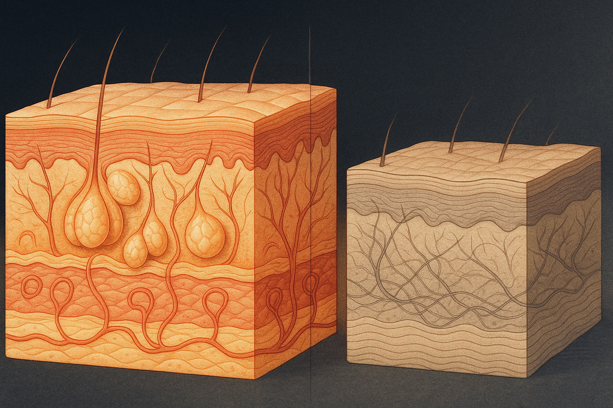
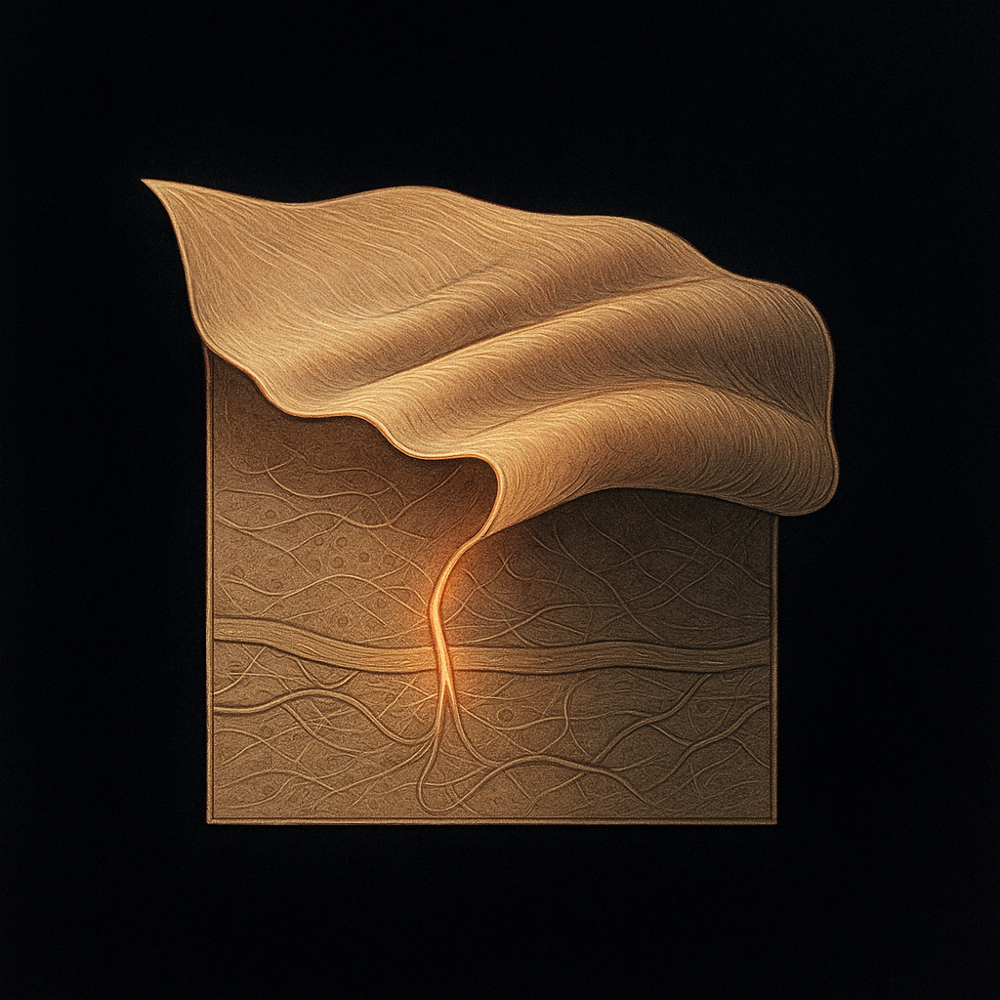
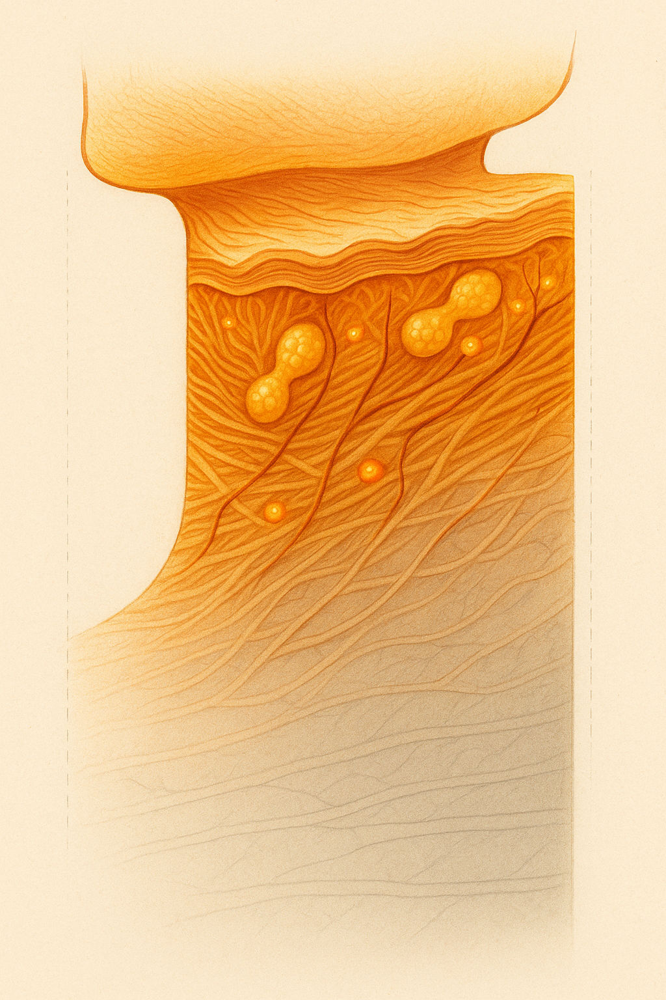

Review below. Reply approve to publish the Facebook post, or tell me edits.

There is a moment a lot of us have had at a set of traffic lights, catching our reflection in the rear-view mirror in flat afternoon light. The face looks like the face we have been tending for years. The neck, dropping down out of frame, looks a little further along. Softer at the jaw. Finer lines running side to side. A tone that does not quite match the work we have put in above it.
That mismatch is not your imagination, and it is not a moral failing. Neck skin is built differently from facial skin, it gets a fraction of the care, and it is doing a harder job all day. Here is what is actually going on down there, in plain terms, and what light therapy can and cannot do about it.
Yes, and the differences are structural, not cosmetic.
Start with thickness. The skin on your neck has a thinner epidermis and a thinner dermis than the skin on your cheeks. The dermis is the deep layer where collagen and elastin live, the scaffolding that keeps skin firm and springy. Less scaffolding, thinner support, means the neck shows slackening and fine lines earlier and more readily than the face does.
Then there is oil. Facial skin, especially across the nose and forehead, is dense with sebaceous glands that keep it lubricated and help defend its moisture barrier. The neck has far fewer of them. Drier skin with a weaker barrier looks duller, creases more easily, and loses water faster, which is why neck skin can feel tight and papery in a way the face rarely does.
So before you have done anything, the neck starts with less collagen scaffolding, less oil, and a thinner barrier. It is the more fragile sibling, quietly.
Now add movement. Your face is expressive, but your neck is in near-constant motion in one particular direction: down. Every time you look at your phone, read in bed, chop vegetables or glance at a screen on your desk, you fold the front of your neck. Thousands of times a day, that thin, low-collagen skin creases along the same horizontal lines.
The phrase people use now is "tech neck", and while it is a marketing coinage, the mechanism underneath it is real enough. Repeated folding of skin that is thin and short on structural support tends to settle those folds in over time. It is the same reason a well-worn page creases where it is bent most.
Sunlight matters too, and this is the honest gap in most routines. Ultraviolet exposure is one of the largest drivers of how skin visibly ages, and the neck and the chest get plenty of it: open collars, scarves left at home, the drive to work with sun coming through the side window. Most of us are diligent with sunscreen on the face and vague about it below the jaw. The exposure arrives all the same.
Here is the quiet arithmetic of it. Neck skin is thinner, drier and less supported. It moves and folds more. It gets comparable sun. And it receives, in most routines, a small fraction of the attention.
Think about your own habits honestly. The serum that stops at the jawline. The mask that is shaped for a face and never designed to reach lower. The moisturiser applied in an upward sweep that runs out of product right where the neck begins. None of this is negligence. It is just that the whole beauty aisle is organised around the face, and the neck has been treated as an afterthought for decades.
The fix is not a heroic new step. It is mostly extending what you already do downward, deliberately, and choosing at least one thing in your routine that is actually built to include the neck rather than stop at the chin.
This is where we have to be careful, because the neck is exactly the kind of area a beauty brand loves to over-promise on.
So, plainly. LED light therapy will not lift a neck, tighten loose skin like a surgical procedure, or reverse years in a fortnight. Anyone selling you that is selling you a story. What the mechanism can do is more modest and more real. The proper name is photobiomodulation. Stripped of jargon, it means certain wavelengths of visible light can gently nudge the skin cells that respond to them, including the fibroblasts that produce collagen and elastin, supporting the look of tone and texture with consistent use over time.
Because neck skin is thinner and lower in collagen to begin with, it is a sensible place to give that gentle, consistent support rather than ignore entirely. But the honest timeline holds here as it does everywhere: think glow and more even-looking tone within a week or two, and any change in the look of fine lines much further out, around the 4 to 8 week mark. It is maintenance, closer to flossing or sunscreen than to a facelift. Gradual, quiet, and only useful if you actually keep it up.
The practical takeaway is simple: stop treating your neck as the place your routine ends and start treating it as part of the same canvas.
It is the thinking behind why our mask covers both. The face piece and the neck band are one device: 70 RGB chips across the face, 33 across the neck, 309 emission points reaching both at once, in a 10-minute session. Not because the neck needs a separate ritual bolted on, but because the light your face is getting is the same light your neck has quietly been going without.
Why the neck ages faster
What to do about it
Your neck is not ageing faster because you did something wrong. It is thinner, drier and less supported than your face, it folds all day, it gets the sun, and it gets left out of nearly every routine. The remedy is not dramatic. It is attention, extended a few centimetres lower, kept up consistently.
We are a new brand still earning our reviews, and we are not going to invent any. What we can tell you is why the neck deserves the same light as the face, and let you judge the rest.
If you want a closer look at how we cover both, the mask and the full spec are here.

Ever caught your reflection in flat afternoon light and noticed your neck looks a step further along than your face? That is not your imagination. Neck skin is genuinely built differently, and it gets a fraction of the care.
Here is why it shows age first:
1. It is thinner. Less collagen scaffolding underneath, so it slackens and lines earlier.
2. Fewer oil glands. A weaker moisture barrier means duller, drier, more crease-prone skin.
3. It folds all day. Every glance at your phone creases thin, low-support skin along the same lines. "Tech neck" is a marketing name, but the folding is real.
4. It gets the sun. Open collars, the drive to work, the side window. We are diligent with sunscreen on the face and vague below the jaw.
So the neck starts with less support, works harder, and receives the least attention. The fix is not dramatic. It is mostly extending what you already do a few centimetres lower, and being patient about it.
Where light therapy fits, honestly: it will not lift or tighten like a procedure, and anyone promising that is selling a story. What it can do is gently support the look of tone and texture over time, which is a sensible thing to give thinner, lower-collagen neck skin rather than ignore it. Gradual, closer to sunscreen than a facelift, and only useful if you keep it up.
Save this for the next time your routine stops at your chin.
Does your routine actually reach your neck, or stop at the jaw? Comment JAW if it stops there, NECK if you already go lower. And tag the friend whose skincare famously ends at the chin.
#SkincareFacts #NeckCare #RedLightTherapy
FIRST COMMENT: If you want a closer look at why we cover face and neck as one (70 face chips, 33 neck, 309 emission points, 10 minutes), the full spec is here: https://redermis.com.au/products/medical-grade-silicone-7-wevelenghts-photon-led-mask-face-and-neck-red-light-therapy-flexible-facial-mask-repair-skin-wireless-use

Your neck is not ageing faster because you did something wrong. It is built differently, and it gets left out of nearly every routine. Save this one.
[SLIDE 1]
Why your neck ages faster than your face. And why it is not your fault.
[SLIDE 2]
It is thinner. Neck skin has a thinner dermis, which means less collagen scaffolding underneath. Less support, so it slackens and shows fine lines earlier than the face.
[SLIDE 3]
It is drier. Far fewer oil glands than the face, so a weaker moisture barrier. Duller, tighter, more crease-prone skin.
[SLIDE 4]
It folds all day. Every glance down at your phone creases thin, low-support skin along the same horizontal lines. "Tech neck" is a marketing name, but the folding is real.
[SLIDE 5]
It gets the sun. Open collars, the side window, the walk to the car. We are careful with sunscreen on the face and vague below the jaw. The exposure arrives anyway.
[SLIDE 6]
Where light fits, honestly. LED will not lift or tighten like a procedure. What it can do is gently support the look of tone and texture over time. Gradual, closer to sunscreen than a facelift, and only useful if you keep it up. Thinner, lower-collagen neck skin is a sensible place to give that support rather than ignore it.
[SLIDE 7]
Save this checklist.
1. Extend every step down past your jaw, on purpose.
2. Include the neck in sun protection.
3. Choose a treatment actually built to reach the neck.
4. Be patient. This is maintenance, not a miracle.
We are a new brand still earning our reviews, and we will not invent any. We would rather teach you why the neck deserves the same light as the face and let you judge the rest.
Does your routine reach your neck, or stop at the chin? Tell me below, and tag a friend whose skincare famously ends at the jaw.
Full spec is in our bio if you want a closer look.
#neckcare #auskincare #australianskincare #skincareaustralia #redlighttherapy #skincarefacts #techneck #skincareroutine #skinlongevity #skincaretips
## Title
Why Your Neck Ages Faster Than Your Face (And How to Fix the Care Gap)
## Description
Neck skin really is built differently: thinner, less collagen, fewer oil glands, folded all day by screens and rarely given sunscreen. No wonder it shows age first. The fix: extend your routine past the jaw, protect it from sun, be patient. Honest note: light therapy is cosmetic, not medical. Face and neck covered as one: https://redermis.com.au/products/medical-grade-silicone-7-wevelenghts-photon-led-mask-face-and-neck-red-light-therapy-flexible-facial-mask-repair-skin-wireless-use
## Hashtags
#neckcare #redlighttherapy #australianskincare #skincaretips #skincarescience
Note: this pin reuses the Instagram image (no separate image is generated for Pinterest).